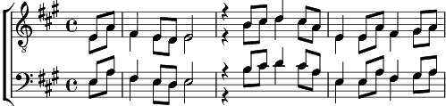

Sur le fil
La majeur
Paroles: Stéphane Blok
Musique: Nicolaï Schlup
Arrangement: Marcel Ott

Sur le fil où je cours
Ou je cours, ou je tombe,
On ne peut sur un fil s'arrêter.
Sur un fil de justesse évité de tomber,
Trébucher car au fil de nos pas s'en aller.
Sur le fil où je cours
Ou je cours, ou je tombe,
On ne peut sur un fil s'arrêter.
S'en aller en vitesse pour ne pas trépasser,
La première maladresse regretter.
Regretter, sur un le fil une question se poser,
De la tête à nos pieds voir un rêve s'embraser.
{ Reprise à Sur un fil de justesse ... }
Coda:
Sur le fil j'ai cessé de courir essouflé.
Rien ne m'est arrivé si ce n'est.
Si ce n'est qu'après l'un sur le sol
L'autre pied, l'autre pied s'est posé.